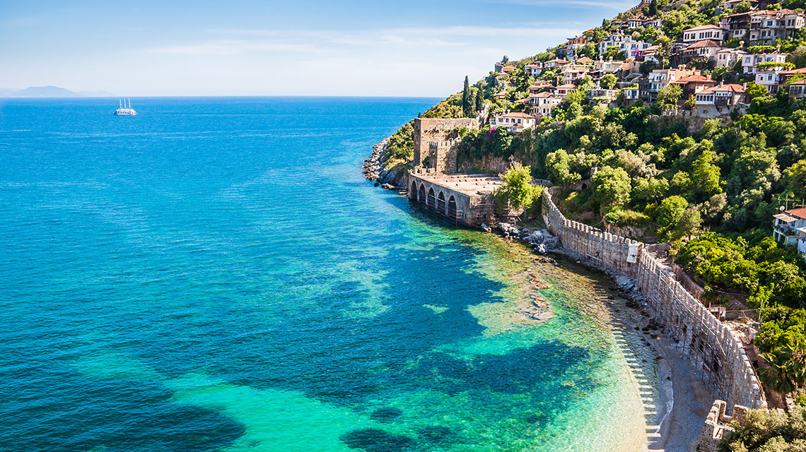

Аланья
- Аланья- город Турции, широко известный центр отдыха с развитой инфраструктурой услуг,
- развлечений. Расположен на побережье Средиземного моря, в 138 км от Антальи.
- Благодаря своему удобному положению на небольшом полуострове на побережье Средиземного
- моря близ хребта Тавр, Аланья была местным оплотом для многих средиземноморских империй.

Достопримечательности
- 1.Дамлаташ-пещера в центре города Аланья,Турция, у западного подножья полуострова.
- Название Дамлаташ состоит из двух слов и переводится с турецкого как
- «необработанный драгоценный или полудрагоценный камень» или «сталактит».
- 2.Кызыл Куле-главная достопримечательность турецкого города Аланья.
- Башня расположена в порту города. Это сооружение XIII века считается символом
- Аланьи и даже изображено на флаге города.Является частью комплекса крепость Аланьи
Климат Аланьи
- В Аланья летом жаркое, влажное, засушливое и ясное, а зимой долгие, холодные, влажные
- и местами облачные. В течение года температура обычно колеблется от 9 °C до 32 °C
- и редко бывает ниже 5 °C или выше 36 °C.
Туризм
Аланья — очень популярный курортный город на турецкой ривьере.
Большое количество туристов, особенно скандинавов, немцев,
русских и голландцев, регулярно проводят отпуск в Аланье в тёплое время года